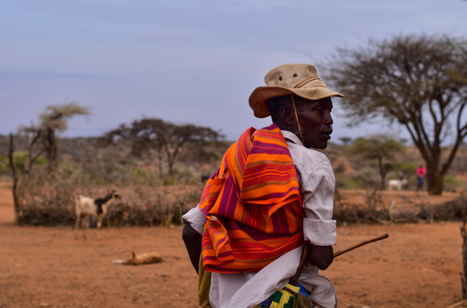
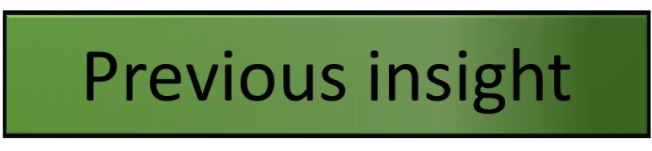

Insight Two: Engaging with external coordination mechanisms helps ensure effective response and positioning for the National Society

What's the evidence?

Resources:
https://www.humanitarianresponse.info/es/coordination
Home